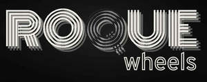
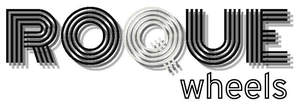

Trade Mark Journal No.2025/013 28 March 2025
UK00004173939 14 March 2025 (6,7,9,11,12,35,37)
Mark 1

Mark 2

- Class 6
- Bicycle and motorcycle locks; metal stands for bicycles and motorcycles.
- Class 7
- Dynamos for bicycles and motorcycles; electrical generators; bearings; springs; clutches and parts thereof; transmissions and transmission shafts; bearings; shock absorbers; springs; starter motors; kick starters; cylinders and parts thereof; camshafts; valves and fittings; crank shafts and piston rings; gear shafts and parts thereof; carburettors and parts thereof; connection rods; oil pumps and oil filters; electrical generators, alternators and dynamos; bearings for engines; chains; starting and ignition apparatus for motor vehicles; oil pumps and oil filters; bearings for engines; electrical generators and parts thereof.
- Class 9
- Bicycle and motorcycle helmets, speedometers; Electrical switches, electrical cut-offs; batteries for land vehicles and motorcycles.
- Class 11
- Bicycle lamps, lights, reflectors; lamps, lights, reflectors and bulbs for motorcycles.
- Class 12
- Bicycles; cycles; tricycles; folding bicycles; cycle cars; air pumps for bicycles; bags, baskets, bells, brakes, chains, frames, gears, handle bars, horns, kick stands, derailleurs, pedals, racks, rims, saddles, saddle covers, seat posts, spokes, stabilizers, trailers, tyres, water bottle cages, fittings for bicycles for carrying luggage, gear levers, brake shoes for bicycles, brake cables for bicycles, panniers; bag carriers; mud guards; bicycle bar ends; bicycle trailers; bicycle cranks; sprockets; bicycle structural parts; bicycle covers; bicycle wheels and hubs; children’s bicycle seats; twist grips; bicycle inner tubes; bicycle suspension systems; bicycle front forks; bicycle toe claps; all for bicycles, cycles, tricycles, folding bicycles and cycle cars; Vehicle axle assemblies; brake shoes, brake pads; clutches and parts thereof; transmissions and transmission shafts; bearings; vehicle wheel hubs; direction indicators; shock absorbers; springs; starter motors; cylinders and parts thereof; valves and fittings; cranks for motorcycles, cycles and bicycles; cranks [parts of land vehicles]; connection rod; connection rods; kick starters; chains; indicators for land vehicles; metal rods/shafts for use within gear shift apparatus, being parts for land vehicles; magnetic flywheels, flywheels being parts for land vehicles; Pedal land vehicles; cycles; bicycles, tricycles; folding bicycles, cycle cars; baskets, panniers, bag carriers, luggage carriers, bells, covers, mudguards, saddles, direction indicators, all for use on pedal land vehicles; stands and kickstands for pedal land vehicles; bicycle pumps, handlebars, bicycle bar ends, bicycle saddle posts, bicycle bar extensions, bicycle trailers, bicycle rims, bicycle cranks, stands, chains, stabilisers, spokes, sprockets, horns, structural parts, fitting bicycle covers, brakes, derailleurs, gears, frames, wheels, hubs, water bottle cages, pumps, children's bicycle seats, twist grips, baskets adapted for bicycles, brake cables, suspension systems, front forks, toe clips; parts and fittings for all the aforesaid goods.
- Class 35
- Retail services, wholesale services, electronic retail services, mail order retail services all in connection with the sale of bicycle and motorcycle locks, metal stands for bicycles and motorcycles, Dynamos for bicycles and motorcycles, electrical generators, bearings, springs, clutches and parts thereof, transmissions and transmission shafts, bearings, shock absorbers, springs, starter motors, kick starters, cylinders and parts thereof, camshafts, valves and fittings, crank shafts and piston rings, gear shafts and parts thereof, carburettors and parts thereof, connection rods, oil pumps and oil filters, electrical generators, alternators and dynamos, bearings for engines, chains, starting and ignition apparatus for motor vehicles, electrical generators and parts thereof, bicycle and motorcycle helmets, speedometers, Electrical switches, electrical cut-offs, batteries for land vehicles and motorcycles, bicycle lamps, lights, reflectors, lamps, lights, reflectors and bulbs for motorcycles, bicycles, cycles, tricycles, motorcycles, folding bicycles, cycle cars, air pumps for bicycles, bags, baskets, bells, brakes, chains, frames, gears, handle bars, horns, kick stands, derailleurs, pedals, racks, rims, saddles, saddle covers, seat posts, spokes, stabilizers, trailers, tyres, water bottle cages, fittings for bicycles for carrying luggage, gear levers, brake shoes for bicycles, brake cables for bicycles, panniers, bag carriers, mud guards, bicycle bar ends, bicycle trailers, bicycle cranks, sprockets, bicycle structural parts, bicycle covers, bicycle wheels and hubs, children’s bicycle seats, twist grips, bicycle inner tubes, bicycle suspension systems, bicycle front forks, bicycle toe claps, all for bicycles, cycles, tricycles, folding bicycles and cycle cars, Vehicle axle assemblies, brake shoes, brake pads, clutches and parts thereof, transmissions and transmission shafts, bearings, vehicle wheel hubs, direction indicators, shock absorbers, springs, starter motors, cylinders and parts thereof, valves and fittings, cranks for motorcycles, cycles and bicycles, cranks [parts of land vehicles], connection rod, connection rods, oil pumps and oil filters, bearings for engines, kick starters, chains, indicators for land vehicles, metal rods/shafts for use within gear shift apparatus, being parts for land vehicles, magnetic flywheels, flywheels being parts for land vehicles, Pedal land vehicles, cycles, bicycles, tricycles, folding bicycles, cycle cars, baskets, panniers, bag carriers, luggage carriers, bells, covers, mudguards, saddles, direction indicators, all for use on pedal land vehicles, stands and kickstands for pedal land vehicles, bicycle pumps, handlebars, bicycle bar ends, bicycle saddle posts, bicycle bar extensions, bicycle trailers, bicycle rims, bicycle cranks, stands, chains, stabilisers, spokes, sprockets, horns, structural parts, fitting bicycle covers, brakes, derailleurs, gears, frames, wheels, hubs, water bottle cages, pumps, children's bicycle seats, twist grips, baskets adapted for bicycles, brake cables, suspension systems, front forks, toe clips, parts and fittings for all the aforesaid goods, all for motorcycles and bicycles.
- Class 37
- Installation, maintenance and repair of bicycles and motorcycles.
SE BICYCLES COMPANY LIMITED
Representative: National Business Register Group Ltd